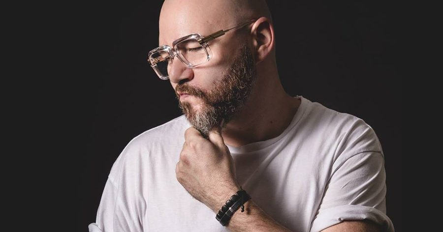

Kolombo Teams With Soulful House Legend Ron Carroll to Show How “We Disco Baby”


Belgian producer Kolombo has nearly 15 years’ worth of quality house music under his belt (and in his record box). But for his latest release on Brazil’s Warung Recordings, he’s called upon the services of someone with even more tenure to help him get things done in style. Chicago legend Ron Carroll has been DJing, producing, and singing since the early ‘80s, and it’s his new collaboration with Kolombo, “We Disco Baby,” that we’re featuring as our Track of the Day.
Titles are sometimes deceptive, and this is certainly true of “We Disco Baby.” In truth, it’s all about the acid house here. While Kolombo lays the groundwork with some particularly gritty percussion, with raw hand claps and hi-hats in abundance, it’s the twisted acid bassline that takes the spotlight on this single. All this sits alongside Carroll’s similarly twisted vocals, of course, which ooze his trademark confidence—plus his willingness to get a little weird when the dancefloor calls for it.
Available March 18 via Warung Recordings.
Follow Kolombo on Facebook | Twitter | SoundCloud
Warung Recordings on Facebook | Twitter | SoundCloud